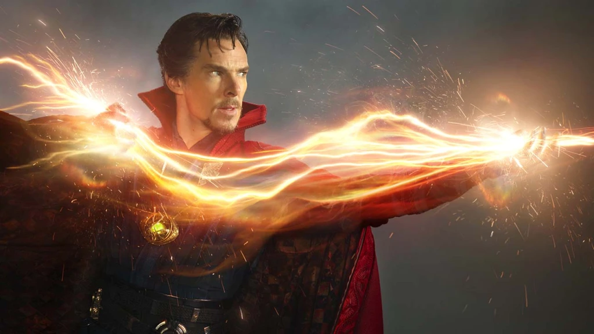

Doctor Strange
On this short blog you will find small information on my favorite avenger Doctor Strange!
On this short blog you will find small information on my favorite avenger Doctor Strange!
Dr. Stephen Strange, M.D. a.k.a. Doctor Strange, was the Sorcerer Supreme for Earth-616. Strange was once a brilliant but arrogant neurosurgeon, until a car accident crippled his hands. When modern medicine failed him, he embarked on a journey to Kamar-Taj in Tibet, where he was trained by the Ancient One. He healed his hands and learned more about Magic, eventually becoming a Master of the Mystic Arts. He settled in the Sanctum Sanctorum in Greenwich Village, New York City, becoming the Earth's protector from any mystical threats.
Dr. Strange possesses a vast mastery of the mystic arts; his primary magical patrons are a group of entities known as "the Vishanti." The Vishanti are a trinity of godly beings comprised of Agamotto, Hoggoth, and Oshtur. Although he has, on rare occasions, called upon the power of demons such as Dormammu; Strange more frequently did so before he realized Dormammu's true dark nature in the earlier issues. He has once stated that he can kill a mortal with the mere twitch of a finger.